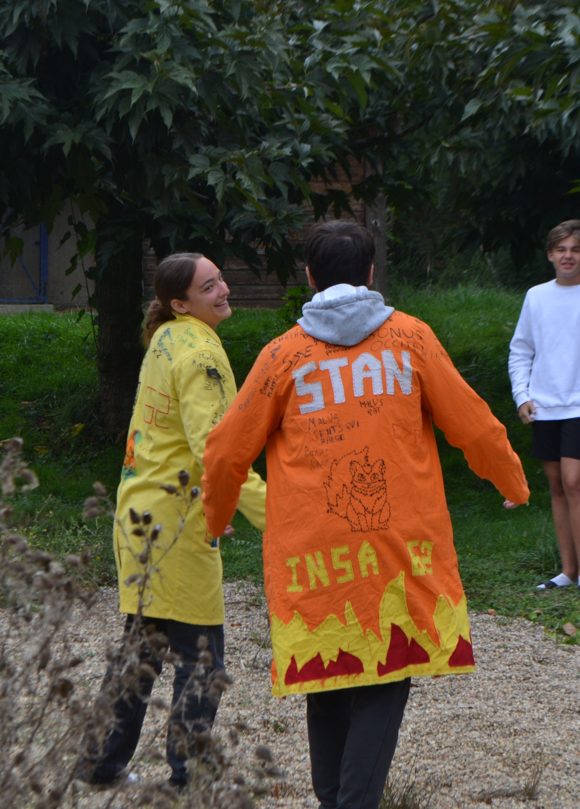
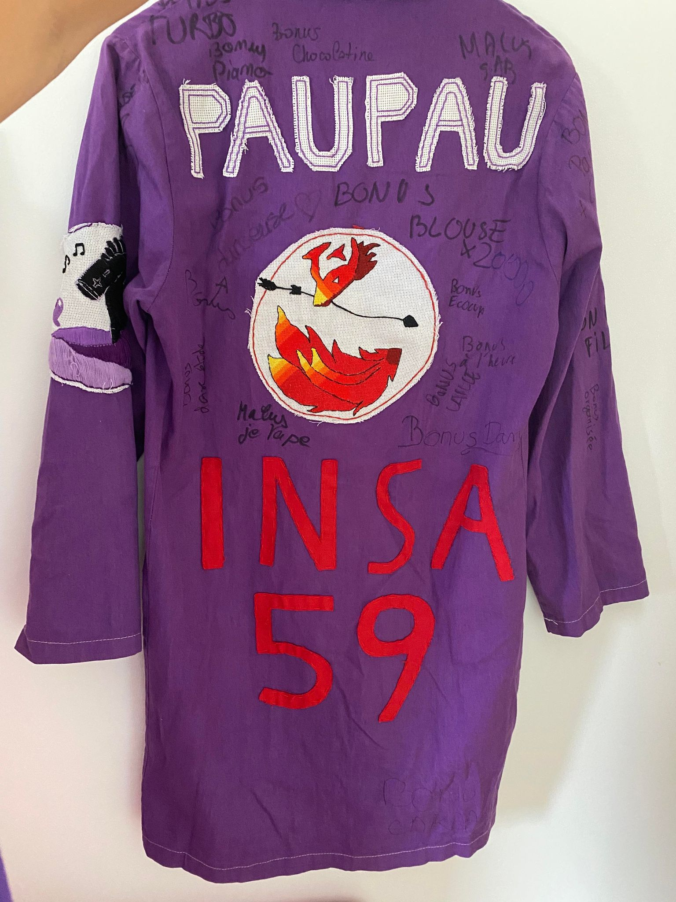
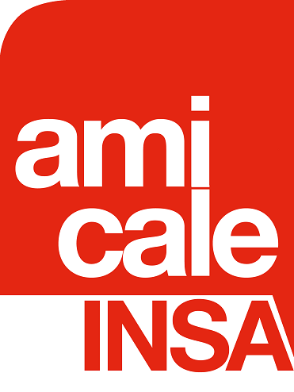
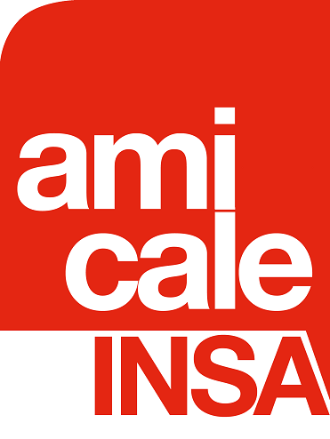

C'est quoi la blouse ?
Vaillant·e élu·e,
Tu fais désormais partie du peuple des Insaïens. À ce titre, tu te dois de respecter les codes ancestraux transmis de promo en promo, du Parthénon de la place Saint Pierre jusqu’aux fjords numériques de la Salle TP 12.
Ta blouse rituelle devra être teinte aux couleurs de ton clan civilisé. L’artisanat et la créativité seront les clés de ton honneur et de ta gloire !
En cette glorieuse année 2025, tu as choisi de rejoindre les rangs d’une grande lignée : celle des bâtisseurs de savoir et des guerrier·ère·s du tissu, à l'image de tes aînés.
Durant cette semaine épique des civilisations, ta blouse sera ton armure, ton étendard, ton manuscrit sacré ! Elle te sera précieuse non seulement lors des rituels de TP, mais elle révèlera au monde entier le·la fier·e Ambassadeur·drice de ta civilisation que tu es (et que tu porteras avec fierté du matin jusqu’à la tombée du soleil).
Les Tables de Loi de la Blouse
• Fil et aiguille, seuls outils légitimes seront.
• Par ta seule main cette tâche tu accompliras — ni mère ni aïeule tu n’invoqueras. Le rite est personnel. Courage, jeune initié·e !
• Marqueurs et feutres, tabous ils sont (ne pas les utiliser). Ces instruments appartiennent aux Érudits de l'Évaluation (tes ainés), qui béniront ou maudiront ta création selon les coutumes.
• Ta blouse devra être une œuvre d’art unique, inspirée des mythes et symboles de ta civilisation. Recopie n’est pas honneur : imagine, réinvente, crée.
• Sur le devant, doivent paraître ton prénom, le blason de ton peuple (ou de ta ville) et son nom antique. Au dos, grave ton surnom avec grandeur et “INSA 63” en lettres dignes d’un monument.
• Manches, poches, recoins : rien ne doit rester vierge. Broderies, motifs tribaux, armes mythiques, dieux, dragons ou plumes sacrées : tout ce qui évoque ta civilisation est bienvenu. L’humour, lui, est récompensé par les Dieux et les Anciens.
Gloire à celles et ceux qui créent !
Un exemple de chef-d’œuvre t’attend si tu veux t’inspirer... mais souviens-toi : les héros ne copient pas, ils laissent leur légende s’écrire à la pointe de l’aiguille.
Prépare-toi, fier·e Insaïen·ne. Que ta blouse raconte ton épopée !



 
